Consequences are visible.
Heavy attacks give the player a reaction window. Surfaces interact by rules that can be learned and reused across encounters.
Barrowlight / Design & development
A turn-based roguelike where the ground, the light, and the timing of a turn all matter.

THE DESIGN QUESTION
Can a player do better on the next run because they understand the world, even before they gain more power?
Barrowlight is built around that question. Encounters use telegraphed attacks, light and darkness, and surfaces that combine. Fire ignites oil, cold freezes water, and lightning travels through wet tiles. The aim is to make the environment something players can read and use.
READ THE FULL DESIGN LOG ↗FROM FEEL TO IMPLEMENTATION
Heavy attacks give the player a reaction window. Surfaces interact by rules that can be learned and reused across encounters.
Pure targeting functions drive both the on-screen preview and the actual cast, so the choice shown is the choice applied.
Rules are separate from rendering. A single seeded random stream makes bot-discovered bugs reproducible, alongside console and application tests.
PROCEDURAL GENERATION
Each floor is a 3×3 grid of cells that fit together like tiles: hand-made set pieces mixed with rooms generated on the spot.
Every cell has the same footprint and the same four doorways, so any cell can sit next to any other. A random spanning tree joins the grid, which guarantees the whole floor is connected, and most of the remaining doorways are opened too, so there is usually more than one route and monsters can arrive from more than one side.
So that no two floors share an outline, up to two cells are left as solid rock (an L, a U, a ring, never a floor cut in two), pairs of cells merge into big rooms such as a nave or a rift gallery, and doorways slide along their edges. Some rooms hold chasms: a well-timed shove drops a foe to the floor below.
About half the ordinary rooms are generated: pillared halls, rooms with several doorways, ruins, or cellular-automaton caverns, built around wherever their doorways fell. They must pass the same validator as the 28 hand-made rooms, so a generated room can never cut off a doorway. Landmark events, a boss arena or a sealed vault claim their own cells, and furniture is placed in whole arrangements, kept only if a flood fill shows nothing was cut off.
Some rooms bring their own fight. In the Rift Crossing, guards hold both bridges and archers fire from the far ledges; a guard never leaves its post, so you break through or knock it into the rift. In the Gauntlet, ambushers wait hidden in the side rooms and step out behind you, but revealing themselves costs their turn, so the ambush is felt but fair.

Floor 4, Ruined Sanctum, seed 4
HOW IT STAYS SOUND
Kruskal’s algorithm over the shuffled grid edges builds a spanning tree; each remaining edge then opens with a 65% chance. Where a moved doorway meets a hand-made wall, the fewest walls are carved to join it up. The room farthest from the start holds the boss or the door down.
Doorways open, every tile reachable, a clear centre for encounters, at least half floor. A generated cell that fails is repaired or rerolled, up to 40 times.
A console test flood-fills hundreds of floors and checks event rates. A viewer made for tuning draws any floor of the run from its seed, using the game’s own parameters.

CONTRIBUTION & PROCESS
I designed the systems, directed the architecture, and made the calls about what stayed, changed, or was cut.
Much of the code was implemented with AI coding assistants under my direction. I playtested each system by hand. The repository records that process and the technical trade-offs; it includes 19 console test programs, two application test programs, and a playtest bot.